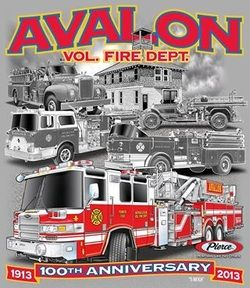
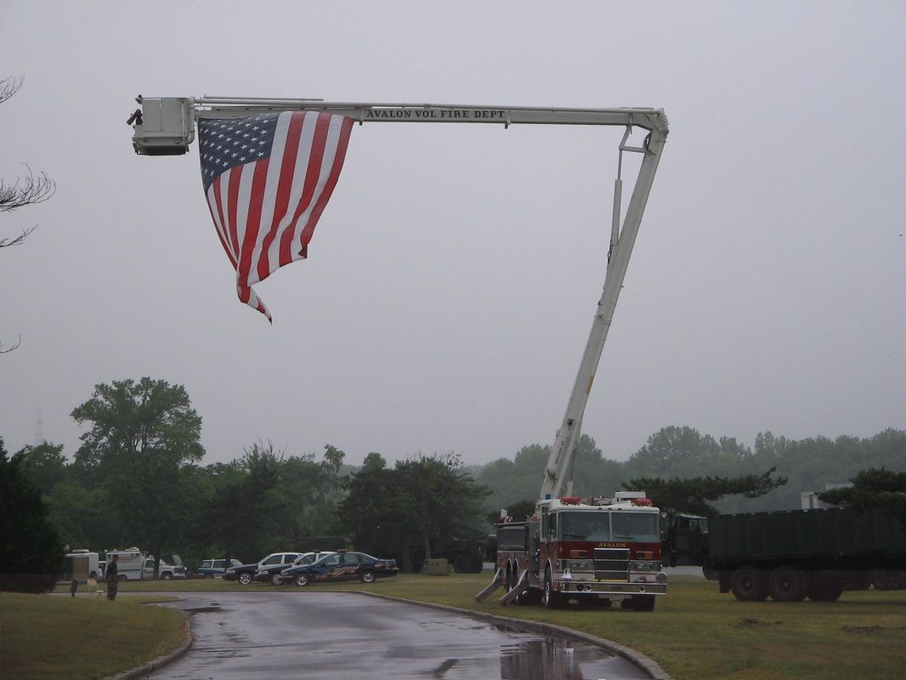

Limited-edition 9-11 Memorial print
A numbered, signed print of Doris Zogas’s watercolor of the Avalon 9-11 Memorial, dedicated in September 2012. Only 120 prints in circulation; $100, unframed.
Details and how to buyThe Avalon Volunteer Fire Department answers fire, rescue and water emergencies across Avalon and stands ready to help our mutual-aid partners up and down Cape May County.
We are always looking for new volunteers. Call Kevin Scarpa at 609-967-5915 or send us an email.
Inspections are conducted by certified inspectors of the Borough of Avalon Construction Office. The fire department cannot perform this service. Contact the Fire Inspection Office.
New Jersey law requires you to pull over and yield to emergency vehicles. Watch the video to see why it matters.
Congratulations to all of our winners, and thank you to everyone who supports the raffle. It sells out every year, often with a wait list.
Sponsored by the Friends of the Avalon Volunteer Fire Department. Benefits the Avalon Volunteer Fire Department. License RA-2026-05 · ID# 18-9-39541.
A numbered, signed print of Doris Zogas’s watercolor of the Avalon 9-11 Memorial, dedicated in September 2012. Only 120 prints in circulation; $100, unframed.
Details and how to buy
Missed the 100th anniversary ceremony on October 19, 2013? Watch it in two parts: Part 1 and Part 2. There’s also vintage video of the 1967 Mack C engine housing.

When the New Jersey Run for the Fallen passed through Avalon, our members turned out at the firehouse to support the active-duty and retired military runners, who stop every mile to remember a fallen service member. Show your support.
This video shows how quickly heatstroke can set in inside a parked vehicle, even on a mild day.
Living on a barrier island means planning ahead for storms and power outages.
Volunteers keep this department running. Call Kevin Scarpa at 609-967-5915 or email kscarpa@avalonfire.org.